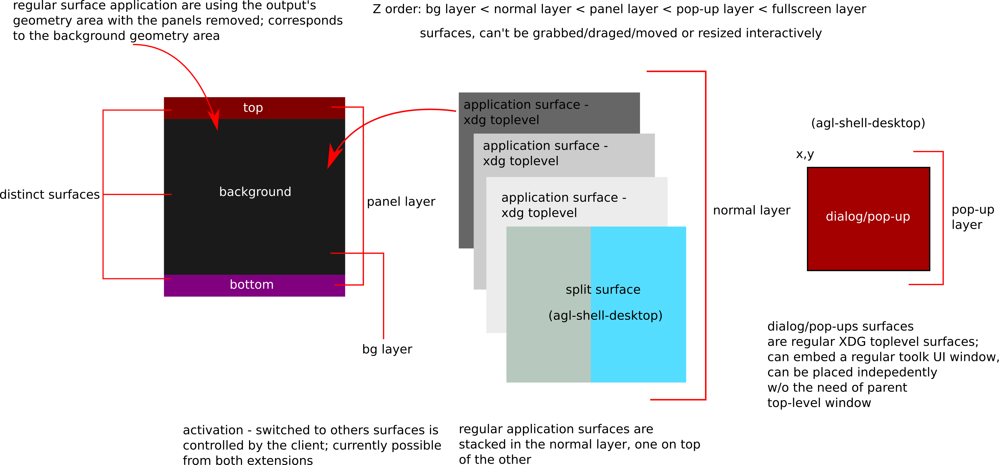
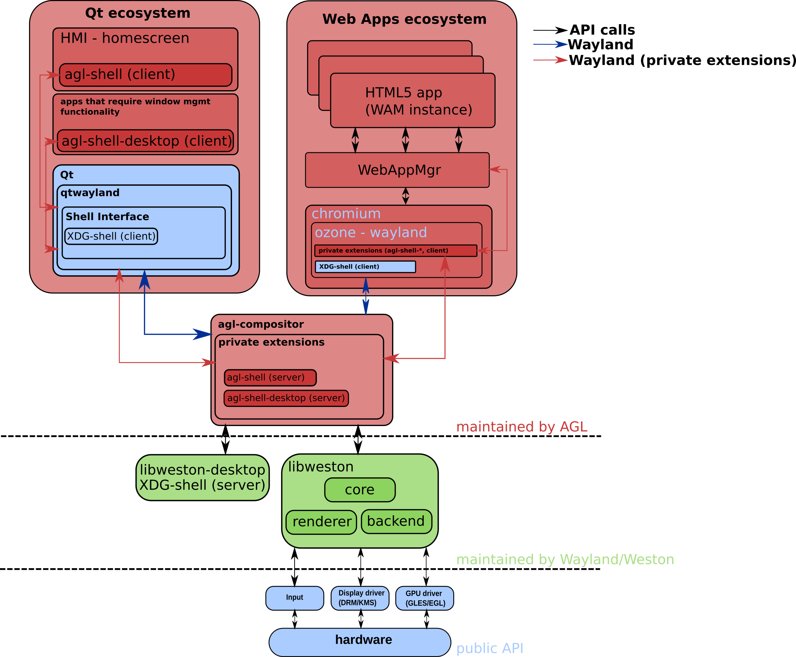

Wayland compositor
When the AGL project was started, weston was chosen as the compositor, which is the reference implementation of a Wayland compositor, while for window management functionality it relied on ivi-shell (In-Vehicle Infotainment) together with an extension, called wayland-ivi-exension.
A demo platform image of AGL comes with a handful of demo applications, done with the Qt, which abstracts the protocol communication between the client and the compositor. Additional functionality was in place under the form of library, to control and signal back to the compositor when applications were started, among other things.
Management of applications, starting, running and stopping them is done in AGL with AppFW Application Framework Management, which is an umbrella name to denote the suite of tools and daemons that handle all of that. It is integrated with systemd and with the current security model. Applications can use AppFW to hang off data, and to pass it down to other services. Together with AppFW, applications could tell the compositor which application to activate or to switch to.
Simplifying the graphical stack
Trimming down these abstractions, simplifying the way clients interact with the compositor, and avoid using modules that aren't really maintained upstream were the reasons behind looking at alternatives to ivi-shell. On the desktop, xdg-shell is currently de-facto protocol for handling all window management related functionality.
Wayland protocol has a window-like interface embedded into its protocol (called wl_shell), but xdg-shell has long time ago deprecated it and instead of adding it in the wayland protocol namespace, it was integrated together with some other useful protocols, into wayland-protocols project. The whole purpose of wayland-protocols is to enhance the Wayland protocol with new functionality and bring new extensions entirely. Compositors are free to implement, modify, enhance, and add new extensions to wayland-protocols but they need to do so in consensus.
Besides the core wayland protocol and extended functionality from wayland-protocols, a compositor can provide and implement additional protocol extensions (custom to that compositor). By using such private extensions we align with the AGL project and its requirements, without compromising specific functionality and allows to add or improve the current ones. With that in mind, the approach was to create a new compositor, called agl-compositor and implement dedicated private extensions, rather than trying to modify weston itself, which AGL project would have been required to keep and maintain for itself, as a fork.
A compositor based on libweston
The compositor used currently in AGL, just like weston, is built on top of libweston and libweston-desktop. The latter, among other things, is required as it provides the server side implementation of the xdg-shell protocol which underlying toolkits (like Qt/Chromium project) makes use of to deliver desktop-like functionality. The former is used to provide back-ends and rendering support, effectively managing the HW, besides implementing the wayland protocol.
The high-level goal of libweston is to decouple the compositor from the shell implementation.
Traditionally, clients were entirely separated from the window manager, the desktop environment and the display server. In wayland all these are conceptually under the same entity though they are implemented as different (UNIX) processes, or as a different namespaces with front and back-end APIs, exposed by libraries. The compositor and the shell driving the UI should be seen as one and the same, and in practice, this happens on desktop environments. For AGL, the shell client can be represented under different forms, as well as the fact that the process management has another layer baked-in to handle MAC (Mandatory Access Control) labels and use the above-mentioned Application Framework. These are all tightly integrated and therefore, the AGL compositor will not automatically start the shell client, although there's code to handle that.
Specifying a shell client to be started by the compositor
Nevertheless, one can modify the configuration file, add the shell client path, and the compositor will attempt to start it.
[shell-client]
command=/path/to/your/client/shell
Private extensions
Compositors can define and implement custom extensions to further control application behaviour. For AGL, we have two private extensions defined. One targeted at defining surface roles commonly found in desktop environments (like panels, and backgrounds), which a shell client would bind to, and one targeted at regular application(s) that might require additional functionality: being able to display/activate its own surface or other's application surface, implement some kind of split screen management of windows, or dialog/pop-ups that exhibit always-on-top property even if the active surface has been changed.

Clients can make use of these private extensions to define other kind of roles for instance dialog/pop-ups or full-screen roles, and split windows vertically or horizontally. It includes the ability to activate other applications, assuming that the surfaces have been created, and the capability of delaying presentation for the client shell. Doing so, all the information is displayed at once, rather than waiting for the toolkit to map/show the surface.
An application identification mechanism was required to be able to activate other clients windows/surfaces. A string-based identifier name was chosen which can be used by the client to set an application-based identifier using the xdg-shell protocol. While there's nothing stopping the client to avoid doing that, specifically, to avoid assigning an application identifier, the compositor won't be able to find which surfaces matches to a particular client, if one would want to activate/display it at some time in the future.
agl-shell
Client shellls can make use of this protocol to define panels and background
roles for different surfaces. It includes to ability to activate other
applications, assuming that those are already running. Activation happens by
using using the app_id, respectively using set_app_id request as defined by the
xdg-shell protocol. Established client-side implementation of the xdg-shelll
protocol will have a function exposed which can be used to set an application
identifier. Further more, the compositor will not present/display anything to
the user as long the ready() is not requested. So, after creating the surfaces
assigning them panel and/or background roles, and they're fully loaded,
the client can then issue ready() request and the compositor will start
presenting.
Please consult the protocol file as that is the authoritative way of getting the latest version.
agl-shell-desktop
This extension is targeted at keeping some of the functionally already established in AGL as to a) allow applications display/activate other surfaces/application window, and b) set further roles, specially dialog/window pop-ups and split-type of surfaces.
Clients can make use of this protocol to set further roles, like independently positioned pop-up dialog windows, split type of surfaces or fullscreen ones. Additional roles, and implicitly functionality can be added by extending the protocol. These roles serve as hints for the compositor and should be used before the actual surface creation takes place, such that the compositor can take the necessary steps to satisfy those requirements.
Please consult the protocol file as that is the authoritative way of getting the latest version.
Additional surface roles in agl-shell-desktop
Like mentioned earlier, the compositor is already making use of some (internal) roles, and with this extension we add some further ones. These are:
- split (there's vertical and a horizontal one)
- fullscreen
- dialog/pop-up
Internally these are encoded with different values such that there's a translation needed, between the protocol values and the internal ones. Besides the roles, additional data can to be passed on, but only depending on the role. It is highly recommend to avoid using the protocol to pass down information between different applications using this communication channel. It is only intended to help out with demo applications. Other sharing mechanism are available in the AGL project that can satisfy those requirements.
Receiving application state events from (other) applications
agl-shell-desktop exposes two events which client can install handlers for, one that signals when regular xdg application have been created, and one that signals state changes (active/hidden) as well as destroyed/no longer present surfaces. These events can be useful to add additional functionality if needed.
Activating (other) applications
Both agl-shell and agl-shell-desktop have requests to activate other application based on their xdg-shell app_id. In case the application is present/running, it will attempt to make the surface backing that application the current activate one, with each output having independently active surfaces.
Explicit output
The activation and setting surface roles requires passing a Wayland output (wl_output). The output is the wayland interface representation of an output and is mandatory to pass it down to the compositor when activating a surface. Clients can retrieve it (the output) if they wish to place the surface on other outputs by using the toolkits that expose the Wayland objects. A human-like representation is provided by either the toolkit, or by using other extensions implemented by the client, for instance xdg-output is the one recommended way and provides a mapping between a human representation of the output and the wayland one.
One can also choose the output where the application can start, by configuring
directly the AGL compositor. Under the [output] section one can use
agl-shell-app-id=appid restart the AGL compositor unitd systemd service and
start the application. Currently this only applies to regular applications, the
client shell having to handle it in the code.
Available toolkits, application conversions and available eco-systems
Users and OEM vendors alike have the possibility, depending on their use-cases, to either use some kind of a toolkit (Qt/GTK) for writing application, or use plain C and the wayland library to communicate with the compositor directly, without any toolkit abstraction.
Currently, the demo applications in AGL use the Qt platform with Chromium being at this phase, a second-class citizen, being currently in the works of achieving the same level of integration as QtWayland (the underlying library that abstracts the Wayland interaction) has at this moment. The Qt platform has long been favoured in embedded systems so it feels natural why AGL project chose it over other alternatives. In the same time, as web applications are for quite some time now permeating the application development scene, it also felt natural to add support for a runtime that gives that option, which in AGL was achieved with the help of the Chromium project.
For normal applications, not needing the ability to activate or displaying other's application surface, would basically mean that it would use what the toolkit has to offer, simplifying the application handling even more. Under Qt, the client shell can use QPA (Qt Platform Abstraction) to gain access to Wayland primitives, and implicitly is being able use the private extensions.

On the Chromium side of things, that happens indirectly, as Chromium doesn't expose the Wayland primitives. Not only that, but on the Chromium platform, there's another mid-layer component, called WAM (WebApplicationManager) with the purpose of handling web applications life-cycle.
So, controlling and passing information from a web application, that resembles that of a shell client, has to travel more than a few levels in the software stack, until it reaches the lower layers in Chromium where the Wayland communication and interaction takes place. Support for the private extension was done at the Ozone interface abstraction, which Chromium projects uses now to handle the display/graphical interaction with the lower stack levels.
Streaming buffers and receiving events to and from remote outputs
Quite a common feature, in the infotainment market, is the ability to stream out buffers/data to remote outputs. For instance, super-imposing the navigation application, between the speedometer and tachometer, in the IC (Instrument Cluster) of a car is such a scenario. Just like weston, the AGL compositor is capable of loading up libweston modules and make use of them. And just like weston, the AGL compositor loads up the remoting-plugin to achieve the same thing.
The remoting-plugin uses the DRM virtual output API from libweston together with gstreamer pipeline to capture, using DMA buffers, the DRM output and to stream it, remotely to another machine. They can be over the network, or locally.
Further more, to cope with situations where the output is just a panel/display, without some kind of compositor driving it, the necessity of handling input events is an important feature to have, giving the user to possibility to manipulate the application/environment as he or she seems fit. The compositor loads a plug-in that streams out the buffers to an output remotely, with another plug-in handling the input events. The events, which are sent back from the display to the compositor, are generated with the help of wayland-eque protocol that works over the network, called Waltham.
Together, they provide proper means to achieve a seamless integration with other display devices in the car cabin.
Policies and Role Base Arbitration
The compositor contains an API useful for implementing user-defined policies. It contains a policy engine, and installs by default an allow-all kind of policy. The policy engine controls if the client using the private extensions is permitted to perform those calls. Not only that, but with some policies, it won't allow the client to bind to the interfaces in the first place. That happens with the deny-all policy, which is able to retrieve the client's SMACK label and compares it with the ones statically defined.
In the works, there's a new policy model, called Role Based Arbitration. Internally, how it works, should be found at RBA. While the other two policies are embedded into the compositor, the RBA policy model is an off the-shell policy. Obviously, vendors and users can hook up their own policies, just like RBA did. These all work towards satisfying the driver distraction mitigation requirement for the AGL project, as to avoid overwhelming the driver with too much information.
Users wanting to create their own policy should create a specialized version
of the callbacks defined in struct ivi_policy_api.
As there's no dynamic loading of policies you'll need to recompile the compositor with that policy in mind, specifically like the following:
$ meson -Dprefix=/path/to/install-compositor/ -Dpolicy-default=my_policy build_directory
The default policy found in src/policy-default.c should more than sufficient to get started on creating new ones. Users can either re-purpose the default policy or create a new one entirely different, based on their needs.
These are hooks in place by the policy engine control the creation, committing
and activation of surfaces (ivi_policy_api::surface_create(),
ivi_policy_api::surface_commited(), ivi_policy_api::surface_activate()),
among other situations.
Users can customize the hooks by using some sort of database to retrieve the application name to compare against, or incorporate some kind of policy rule engine. Alternatively, one can use the deny-all policy engine which allows the top panel applications to be used/displayed as permitted applications.
Reactive rules
The policy engine is stateful, and allows the ability to inject back events, such that it allows the user to add custom rules into a policy and, depending on the event received by the policy engine, to execute a rule match for that event. Further more, the framework allows adding new states and events and the default implementation has code for handling events like showing or hiding the application specified in the policy rule. The most common example to exemplify this feature is the ability to show a custom application, like displaying the rear view camera application, when the automobile has been put in reverse.
For deadling with these kind of rules, ivi_policy_api::policy_rule_allow_to_add()
can be used to control if policy rules could be added or not. Finally, we have
ivi_policy_api::policy_rule_try_event() which is executed for each policy
rule added, by using the policy API ivi_policy_add() function.
By default the policy framework it will add the 'show', and 'hide' events and
the 'start', 'stop' and 'reverse' states. An special type, assigned by default
is 'invalid'. A state change has to be propagated to the compositor, which can
happen by using ivi_policy_state_change() function, and which signals the
compositor the state change took place, in order to apply the policy rules, and
implicitly to call the event handler ivi_policy_api::policy_rule_try_event().
Back-ends and specific options for agl-compositor
The compositor has support for the following back-ends:
- DRM/KMS - runs a stand-alone back-end, uses Direct Rendering Manager/Kernel Modesetting and evdev, that is utilizes and runs on real or virtualized HW (qemu/Vbox/etc).
- Wayland - runs as a Wayland application, nested in another Wayland compositor instance
- X11 - run as a x11 application, nested in a X11 display server instance
Building and running the compositor on different platforms
The compositor can run on desktop machines as easily as it does on AGL platform. It should infer, depending on the environment, if it is being compiled with the AGL SDK, or with the host build system. Running would also be inferred from the environment.
The compositor has some additional configuration options like:
--debug- enables the screenshooter interface, useful if one would want to take a screenshot usingagl-screenshooterclient. This might be seen as a security risk to it only be enabled in the AGL platform if built with agl-devel DISTRO FEATURES.
Additional configuration ini options have been added to help with the CI integration. Worth mentioning are:
activate-by-default=[true]- if the surface of the client should be displayed when the application started. Present in the[core]section. By default set totrue. Setting it tofalsewill not activate, by default, the client's surface when started.hide-cursor=[false]- do not advertise pointer/cursor to clients. Present in the[core]section.
Running with software rendering
By default the compositor will attempt to use the GL-renderer, and implicitly
the GPU. One could instead use the CPU, by making use of the Pixman library. To
use it in the compositor append --use-pixman to the command line. This purely
software approach has the benefit that would not rely at all on any GL
implementatation or library. In constrast, even if the GL-renderer is used,
in some situations it won't be able to use the GPU supported implementation
and fallback to sofware based one, and for instance that might happen when
running in virtualized environments.
Both approaches could end up not actually using the GPU, but the latter does actually use the GL library and perform the operations in software, while the former does not use any GL whatsover. All back-ends support disabling the GL-render to make sure it does not interfere with the composing process.
Multiple output set-up and touch input devices
There's no deterministic way in which the compositor enables the outputs and depending on the input devices, specifically touch input devices, and the way the connectors are wired, a touch input device might be associated with a different output than the one intended.
A consistent way, that survives a reboot, is to use udev rules, which libweston would be able to use such that a particular output is tied/associated to a particular touch input device.
For instance, assuming that you have a set-up consisting of 4 outputs, a 4 touch input devices, when the outputs are being enabled the compositor front-end will associate all 4 touch input device -- if they haven't been previously being associated to a particular output, to the first enabled output.
In order to avoid that, and associate each touch input device to
their respective output an udev rule can be installed, for the default
seat (named seat0).
Example of a udev rule:
SUBSYSTEM=="input", ATTRS{idVendor}=="222a", ATTRS{idProduct}=="004a", OWNER="display", ENV{ID_SEAT}="seat0", ENV{WL_OUTPUT}="HDMI-A-1"
SUBSYSTEM=="input", ATTRS{idVendor}=="222a", ATTRS{idProduct}=="004b", OWNER="display", ENV{ID_SEAT}="seat0", ENV{WL_OUTPUT}="HDMI-A-2"
SUBSYSTEM=="input", ATTRS{idVendor}=="222a", ATTRS{idProduct}=="004c", OWNER="display", ENV{ID_SEAT}="seat0", ENV{WL_OUTPUT}="HDMI-A-3"
SUBSYSTEM=="input", ATTRS{idVendor}=="222a", ATTRS{idProduct}=="004d", OWNER="display", ENV{ID_SEAT}="seat0", ENV{WL_OUTPUT}="HDMI-A-4"
Add the following under /etc/udev/rules.d/91-output.rules and reload udev
rules for these changes to take effect:
$ udevadm control --reload-rules && udevadm trigger
Note that in the above example, we use physical seat, named seat0 which is
the default physical seat. You can verify that these changes have been applied by
checking the compositor logs (under /run/platform/display/compositor.log file)
You should be seeing CONNECTOR-NO by udev message like the following:
associating input device event0 with output HDMI-A-1 (HDMI-A-1 by udev)
vs
associating input device event0 with output HDMI-A-2 (none by udev)
where the rules are either incorrect or badly written.
Retrieving device attributes could be done archaically using lsusb or lspci
or using udevadm info -a /dev/input/event* which can provide with a multitude
of attributes to use. In our above example we only relied idVendor and
idProduct but potentially other attributes might be used.